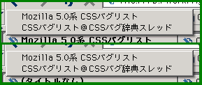
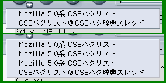

iframe要素またはiframe要素を子に持つ要素をJavaScriptで参照すると、現在表示しているページがブラウザの閲覧履歴に追加される。特に、ブロック表示系プロパティ（overflow, displayなど）を操作した場合に発生しやすい。
<script type="text/javascript">
function disp() {
var obj = document.getElementById('f1');
if (obj.style.display != 'none') {
obj.style.display = 'none';
} else {
obj.style.display = 'block';
}
}
</script>
<div id="f1">
<iframe src="b006a.html" width="200" height="100"></iframe>
</div>
<form action="#">
<input type="button" value="displayプロパティ変更" onclick="disp()">
</form>
ボタンを押すことで、インラインフレームを含んでいるdiv要素の表示形態を「表示しない←→ブロック」のように切り替えることができます。
各画像の上段は「displayプロパティ変更」ボタンを押す前、下段は同ボタンを5回押した後のセッション履歴のリストです。
Moz1.0での結果
N6.2.3での結果
N6.2.3では履歴が追加される現象が発生しています。Moz1.0では修正されています。